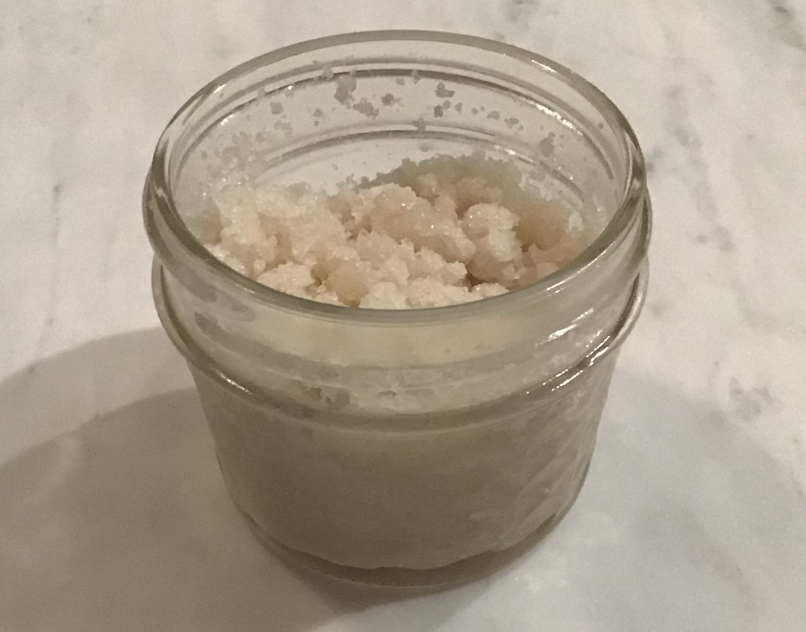
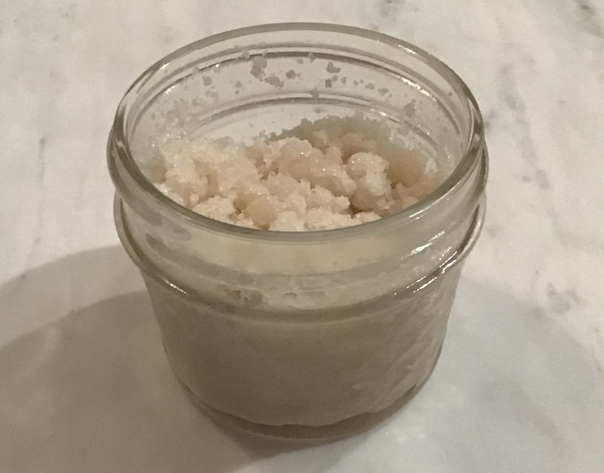

Our scrubs are always made from fresh and organic ingredients!
Our mission is to spread joy through our all-organic that exfoliate, moisturize, and make your skin happy!
 



Yes, we are using all organic ingredients.
4oz for $6.50
Organic coconut oil, sugar, either brown or white, and flavoring: cinnamon, ground coffee, lemon juice and zest, and vanilla extract.
Scrub onto your body, arms, legs, feet, and hands, then wash off. Best used in the shower to soften your skin.